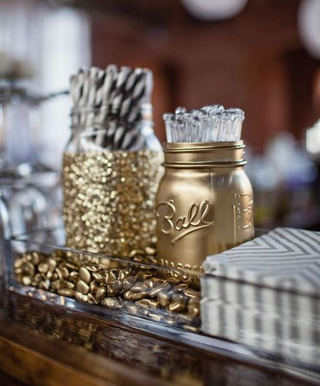

.png)
.PNG)
.PNG)
.PNG)
.PNG)
.PNG)
.JPG)
.JPG)
.PNG)
.PNG)


source
Happy weekend! Will you be attending or hosting an Oscars party this weekend? I have been looking at all the beautifully creative ideas online the last few days and thought it would be fun to share a few of them with you here. (There must be a zillion out there!) Even if you aren’t interested in the Academy Awards, perhaps some of the details could be saved for other entertaining occasions. (A few of these came from weddings..not Oscar parties. 🙂 )
The first thought that comes to mind with this kind of party is glitter and glitz. Fancy is fun for an Oscar party! Here is a super cute invitation that sets the tone perfectly. (And there are full diy directions at the site.)
After the invitation, the next thing to think of is…no not the food….the games! You want to have some friendly competition going on. Which of your guests can pick the most winners? Here are several lovely options for voting ballots.
(They even have that cute diy Oscar award on the site! 🙂 )
More ballots.. sugarandcharm.com
sugarandcharm.com
Or perhaps bingo is more your style? (This one is from a previous Academy Awards show and would have to be updated, but I love the styling on the kraft paper.)
After the invitations and the games are planned, think about the table setting. I thought this one was simple and classic.
Then even had an oreo stack cake like we had at our daughter’s graduation party
and a printable Oscar.
Here is another party with a lot of pretty ideas (from the creative folks who designed the invitation at the start of the post.)
This next one has been saved on my Pinterest board for a long time because of those absolutely precious cupcake toppers. (Several good ideas at the site.)
An entire movie party kit is available for purchase below and could easily be adapted to an Oscars party.
Loralee Lewis always does over the top events with every kind of detail imaginable.
Even Orville Redenbacher gets in on the Oscar action with this party. 🙂
Speaking of Orville, there are tons of great food ideas out there for your party. (This one includes the cupcake recipe.)
I thought these cake pops were so clever!
I think we have enough ideas to get that party started now; don’t you? Before your guests arrive you might want to take a look at some Oscar history so that you can be a knowledgeable host (or quiz your guests on Oscar trivia!) Check out this infographic.
And you will want to read up on all the latest from the official site.
Now as much as I would love to be decorating for a glitzy party to watch the Oscars, and serving beautiful cupcakes such as these…
We will be sitting at home with just the family, watching to see if Frozen wins any Oscars for animation or its music. (That’s how our movie tastes run. 🙂 ) And I will be wearing pajamas, enjoying a Coke, and munching on…
But next year…I just might use these invitations and host a party. 🙂
So what are your plans for the weekend? I am working at our school’s Spring Fling (yes, we are into spring already!) and doing a little shopping. Hope to have a post up about my finished February organization project for you tomorrow. (Yay, two completed for the year!) Thank you for all your kind comments on the Dowton Abbey and British Designer post. I think all of us could happily live in an English cottage! 🙂
Until next time…


.PNG)
I did watch it a little bit just to see some of the fashions. I like all the ideas for parties. Amazing how much talent there is out there! One can look at pinterest for hours it’s that good!
What cute ideas!!! I’m not one to watch award shows, but still, the inspiration flows for me! The cookies on the cake plate could be used for so many occasions. The tux cake pops would be cute as a “groom cake” for kids at a wedding. Even the glitter envelopes could be used for a St. Patrick’s party. Thanks for sharing!
What outstanding Oscar party ideas! You so inspired me to fix an AllStar dinner: Roasted chicken, cranberry/pecan herb dressing, mashed potatoes, drop dumpings and steamed green beans. For dessert — Mounds chocolate pudding/dream whip topping AND a winner—-triple chocolate cupcakes with a hidden Cadbury Easter egg inside with chocolate frosting! Ta-da! I know how you like all that chocolate, Kelly!! Then I had popcorn and diet coke during the show! 🙂 Can’t wait to see your next organization idea–not that I have finished my foyer coat closet project—got my baskets to put iside tho—
Hi Kelly,
What cute ideas! I watched the whole shebang last night. Including the coverage of the red carpet. I love it all. Then my hubby, Bill, joined me for the actual awards program and we both really enjoyed it. Although I really felt that Sandra Bullock should have won Best Actress. Her performance in Gravity was outstanding! Oh well…
Thanks for all of this, once again!
Cath
I didn’t watch last night, buy just checked…..so happy Frozen and Let it Go won!!!! I bet your daughter had a smile on her face.
Kelly,
I love the tux cake pops! I won’t watch the Oscars here, (we aren’t very big tv people) but I will check tomorrow to see if Frozen won any awards. Since we have gotten and are getting more snow and ice I am off of school again tomorrow. My daughter and I will sleep in and drink hot cocoa while making truffles for school Tuesday which happens to be Mardi Gras or Fat Tuesday.
Kelly,
What a great bunch of ideas. I love the idea of Oscar bingo. We’re sitting home by the fire, eyes glued from red carpet walks to the end.
I usually see most of the movies nominated, this year I haven’t seen one! It will be fun to see which movies I should really see after the winners are announced. 🙂
xo,
Karen
So many cute ideas! The bingo games cracked me up. I like the Oreo stack cake, too. That’s perfect for a casual party with friends. It’s been raining pretty steadily here in the L.A. area– hopefully we’ll have clear skies on Sunday!
Any excuse to throw a party and I’m normally on board. But I must admit pj’s and fresh hot popcorn sound better to me than all the giltz and glam. I will go all out and have a Dr. Pepper too. Cute post.
Kelly,
Although I probably won’t watch the Oscars, I enjoyed the party ideas. I especially loved the kraft paper bingo cards–but then again, I think I have a kraft paper addiction. Those elegant cupcakes are to die for! Can you just imagine how delicious they are if they taste half as good as they look? Yum!
Thanks for the fun ideas! Enjoy your weekend.
I have a feeling we will be watching in our pi’s and hear the final winners the next morning, but these images make me wish otherwise. Adore the Oscar ballot from Sugar and Charm and the cupcakes in the gold foil…amazing!! Wish I had one to eat right now. Happy weekend ~
Doing laundry, checking email and “blimey” another post already from KELLY! Your too much. Look at all the cute ideas you found. Love the gold and glitter ball jar pic, the cute game ideas and had to do a double take on the picture of the table setting with the stack of Oreos! Oh my gosh, I thought it was a table setting at your home. Between the oreos and the luscious cupcakes, well, I’m drooling. I just started to try and seriously behave myself and stick to a low-cal diet. Well, no party here, though that would be fun. It will be a quiet evening and yes, I will be watching. It will be interesting to see who wins. The last movie I actually went to was last summer and it was an indy film, The Way Way Back, with Steve Carell. I know. WHAT? I don’t go to the movies like my kids do. I think the only one they haven’t seen yet is 12 Years a Slave. It will be fun to see what they stars wear, what they say and who wins. Thank goodness Downton is not on!
Debra
I haven’t been to a movie all year.I gave up being interested in the Oscars years ago. I rarely like the movie that wins and don’t know enough about the actors to care. I do like the black, white and gold theme for a “formal” party. I hope Frozen wins something too…..hey…..I did see a movie, Frozen!!!!!